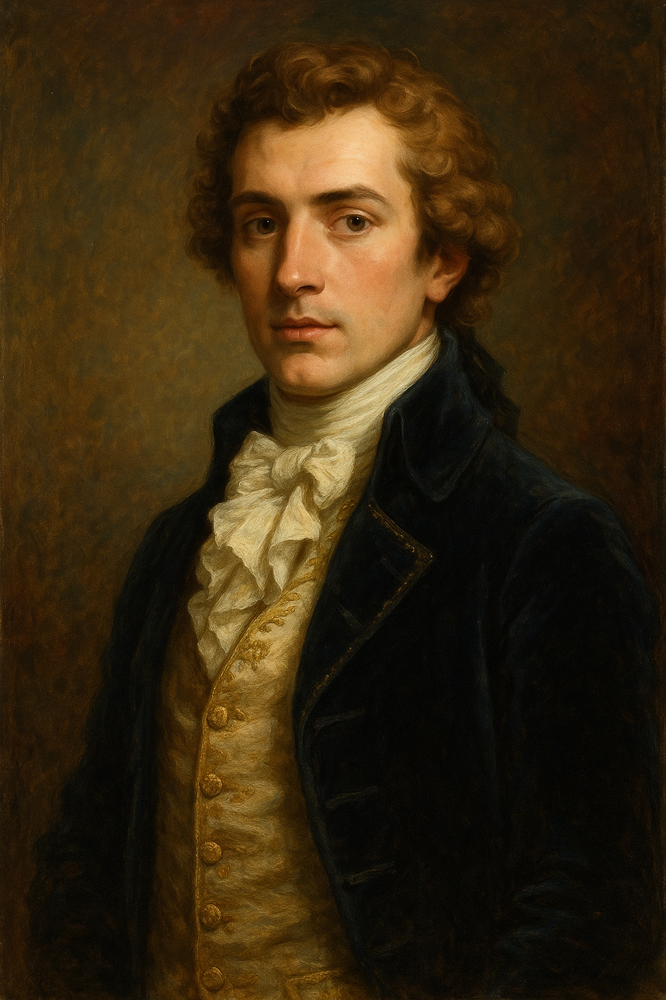

Emeric de Puyrault
Elegant aristocrat, master fencer, intelligent and composed under pressure.
Overview
Émeric de Puyrault is an elegant young aristocrat of 26, master swordsman, and heir to a substantial but impoverished estate north of Lyon. He is charming, intelligent, and composed under pressure—but also isolated by the social fractures of post-Restoration France and increasingly concerned about the occult forces gathering in Lyon.
Appearance & Demeanor
- Appearance: Striking, well-groomed, dressed impeccably in fashionable dark coats and crisp cravats
- Bearing: The natural grace of French aristocracy combined with military precision from fencing training
- Voice: Warm, measured, with traces of wry humor
- Manner: Polite but never obsequious; he moves through society with quiet confidence
Characteristics (CoC 7e)
STR 55 CON 60 SIZ 60 DEX 75
INT 70 POW 65 APP 80 EDU 75
HP: 12 MP: 13 Move: 8
Build: 0 DB: —
SAN: 65 Luck: 65
Combat Skills
-
Épée (Fencing Saber) 80% — 1D6+1
- On 01–05: automatic riposte → immediate 1 free attack at 40%
-
Pistol (flintlock) 45% — 1D10+2, 1/3 rounds
-
Dodge 60%
-
Brawl 45%
Professional Skills
- Charm 75%
- Fast Talk 55%
- Persuade 70%
- Credit Rating 75%
- Spot Hidden 50%
- Listen 55%
- Psychology 50%
- Ride 65%
- History 50%
- Occult 35%
- French Nobility Etiquette 80%
Special Traits
- Master Duelist: Acts at +20 DEX in first melee round
- Unflappable: Advantage on SAN rolls vs. violence or gore (but not Mythos exposure)
- Aristocratic Bearing: Social rolls with French nobility gain +20%
- Order Adjacent: Knows enough about the occult to be useful but not enough to suffer SAN loss from exposure
Role in Chapter 2
At the Ball at Château de Camberonne, Émeric introduces the investigators to Viscount_Adrien_de_Montferand, framing it as “a meeting of old friends and new allies.” Later, if the investigators befriend him, he may offer them:
- Access to his estate library (contains occult texts)
- An invitation to stay at Le Coteau des Ombres
- Subtle intelligence about Mathilde_Savarin’s influence in Lyon
Motivations & Secrets
- Primary: Restore his family’s honor and estate to pre-Revolutionary prosperity
- Secondary: Uncover the truth about the strange occurrences near his estate
- Tertiary: Resist Savarin’s romantic advances while keeping her trust
He has detected “strange resonances” in the old Roman quarter near his property and intends to investigate them further. This places him on a collision course with the investigators’ mission.
Public Reputation
- Known as a capable swordsman and elegant courtier
- His family’s estate has been damaged but not destroyed by Revolution
- Whispered suspicion that he was in England during the Terror (true)
- Considered a potential marriage prospect for ambitious families
Estate: Le Coteau des Ombres
Émeric’s family seat lies on the northern outskirts of Lyon, overlooking the Saône. The estate includes:
- A three-story manor house (partially fire-damaged, gradually restored)
- Outbuildings (wine press, stable-house)
- Walled garden (overgrown)
- Private chapel (deconsecrated, locked)
- Vineyard (half-productive)
The estate has a dark history: it served as a revolutionary barracks in 1793, and locals fear it is tainted by blood. The vines bear small, black clusters that villagers call “les raisins de la honte” (the grapes of shame).
Staff
- Jules (steward, mid-50s): Loyal, cautious, ex-soldier. Lives in the gatehouse.
- Thérèse (cook/maid, elderly): Warm-hearted, mostly deaf. Refuses to approach the chapel.
- Lucien (stablehand, groundskeeper): Ex-soldier with a limp, missing two fingers.
Keeper Notes
- Émeric is a potential long-term ally if the investigators treat him with respect and transparency
- Do not make him a deus ex machina—his resources are real but limited
- His attraction to Mathilde_Savarin is genuine but increasingly uncomfortable; he senses something wrong about her but cannot articulate it
- If the investigators accept his hospitality, the estate becomes a safe haven in Lyon
- He should not be forced into confrontation with Savarin; his loyalty is divided
Campaign Design Notes
Émeric serves as a bridge between the investigators and Lyon’s aristocratic circles. He is not a cultist, but he is entangled with cultist circles through Mathilde_Savarin. His ultimate fate depends on player choices.
Campaign History
Chapter 2 — Lyon
The investigators encountered Puyrault at the Ball at the Hôtel de Brissac in Paris, where Georgiana returned his family seal ring — recovered from bandits at a roadside inn on the journey from Dover. Grateful, Puyrault invited the party to stay at Le_Coteau_des_Ombres and provided lodgings throughout the Lyon chapter.
At the Ball at Château de Camberonne, Puyrault introduced the investigators to Adrien de Montferrand, an old friend who would become one of their most important allies.
Throughout the chapter, Puyrault formed a romantic attachment to Georgiana, which she spent the entire Lyon chapter politely deflecting. After the destruction of Savarin’s cell, the party rested at his estate for several days before departing for Vienna. Puyrault proposed to Georgiana. She refused, explaining that she had to move on. He remains at his estate, a rejected but genuine suitor with an open door.
Connections to Other Files
- Le_Coteau_des_Ombres — His family estate
- Jules_Steward — His loyal steward
- Viscount_Adrien_de_Montferand — His friend and ally
- Mathilde_Savarin — His romantic entanglement
Relationships
- Courts Mathilde Savarin — Target of Savarin's romantic manipulation
- Employs Jules Steward — Loyal steward of his estate
- Employs Therese — Elderly cook and maid on his estate
- Employs Lucien Stablehand — Groundskeeper and stablehand, ex-soldier
- Friend of Viscount Adrien de Montferand — Old friend; introduces investigators at the Ball